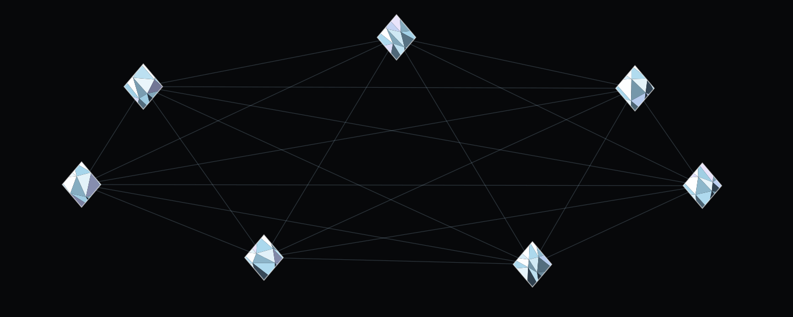

What Equilibrium is
A body of argument, published in public, about how the international system should be ordered.
An argument, not an office
Equilibrium exists as a position and the case made for it. It claims no mandate, no representation and no expertise, and asks to be judged on whether the argument holds.
General by design
The five principles are stated at the level of the system, not of any particular dispute. Applying them to a specific question is a separate act, taken deliberately and published as such.
Open in method
The statement is published in full. Anything drafted from it is marked as drafted from it. Nothing that has not been decided is presented as though it had been.
Multipolar, and what that means here
“No single power, bloc, or ideology should determine the future of the international system.” The figure below is the shape of that sentence.

Decisions that have not been taken
Three groups: the movement, the practice, and the Circle. They are shown rather than hidden. Several carry legal consequences in whichever country they are taken, and none of them can be answered by a website.
| Question | Why it matters | Status |
|---|---|---|
| The movement | ||
| Legal form | Association, non-profit, think tank, or no legal entity at all. Determines everything below. | To be decided |
| Country of registration | Sets which law applies to funding, to declarations and to the supporter list. | To be decided |
| Membership | Whether Equilibrium has members at all, or only readers and supporters. The two are not the same thing legally. | To be decided |
| Funding | Whether the movement accepts contributions, from whom, and under which country's rules on political financing. | To be decided |
| Spokesperson | Who speaks in the movement's name, and whether that person is named publicly. | To be decided |
| Languages | The statement is in English. A movement that argues for a multipolar world in one language only is arguing against itself. | To be decided |
| Publication rhythm | How often a position is published, and in what form. | To be decided |
| Contact channel | Which address receives what the join form collects, and who is responsible for it. | To be decided |
| The practice | ||
| Separation from the movement | Whether the practice is a separate legal person from the movement, and which of the two signs a client engagement. Every other row in this group depends on the answer. | To be decided |
| Registration as a representative | Putting a client's position to public decision-makers is a registrable activity in most countries, and doing it for a foreign principal is registrable again under a stricter regime. Which registers apply follows from where the practice sits and from where each client sits. | To be decided |
| Client acceptance | Which entities and which states the practice will act for, and which it will refuse. This is the policy that decides what the name comes to mean, and it cannot be written by anyone but the founder. | To be decided |
| Publication of clients | Whether every mandate is published here, or only those a register already makes public. | To be decided |
| Positions and mandates | Whether the movement may publish on a question where the practice holds a mandate, and what it says about the overlap when it does. | To be decided |
| Fees | How the practice is paid, and by whom. No figure appears on this site until this is decided. | To be decided |
| Money between the two | Whether the movement may receive anything from a client of the practice. In several countries this is settled by law rather than by preference. | To be decided |
| Professional cover | Insurance, a conflicts register, and who is responsible for keeping them accurate. | To be decided |
| The Circle | ||
| What membership is | A legal membership carrying rights, or a subscriber circle carrying none. Only one of the two creates obligations towards the members. | To be decided |
| Admission and exit | Who is admitted, by whom, and on what grounds a membership ends. | To be decided |
| Contribution | Whether members contribute, how much, and under which country's rules on political financing. | To be decided |
| Member data | Who holds the member list, in which country, and under whose responsibility. Membership of a political movement is sensitive wherever it is held. | To be decided |
| The directory | Whether members can see one another at all. A directory of the members of a political movement is the most sensitive object anywhere in this project. | To be decided |
| Activities | Which of the formats on the Circle page actually run, how often, and where. Nothing is scheduled and nothing is announced until this is answered. | To be decided |
Why this table is public
A visitor who reads “legal form: to be decided” understands that this is a movement at its beginning. A visitor who is told nothing assumes something is being withheld. The second costs more than the first.
No number appears anywhere on this site: no membership figure, no founding date, no country, no funding, no audience. Not one of them is known, and a political movement that publishes a figure it cannot support loses the argument the first time somebody checks.
Questions and answers
Is Equilibrium a political party?
No. It is a movement: a body of argument, published in public. It does not contest elections and it presents no candidates.
Which country is it based in?
That has not been decided, and the site says so rather than implying an answer. When it is decided it will be stated here plainly.
Is it aligned with a particular government?
No. The central position of the statement is that no single power, bloc or ideology should determine the international system, which rules out acting for one.
What does multipolar mean here?
That several centres of decision are able to act, and that the future of the international system is not settled by one of them. It is a statement about structure, not a preference for any particular set of powers.
Does the movement take a position on current conflicts?
The five principles are general. A position on a specific dispute is a separate act and is published as such when the movement chooses to take one. Nothing on this page should be read as one.
Is balance the same as neutrality?
No. Balance is a claim about how the system should be ordered. Neutrality is a refusal to hold a view on a particular question. One does not require the other.
How is the movement funded?
That has not been decided. Political financing is regulated, and the rules depend on the country of registration, which is itself still open.
Can I join?
The form on this site is a mockup and sends nothing anywhere. Before it can accept a single name there has to be an identified body receiving the data and a country whose law applies to it.
Who wrote the text on this site?
The statement is the movement's own words, quoted without alteration. Everything else is draft copy written from that statement, for approval.